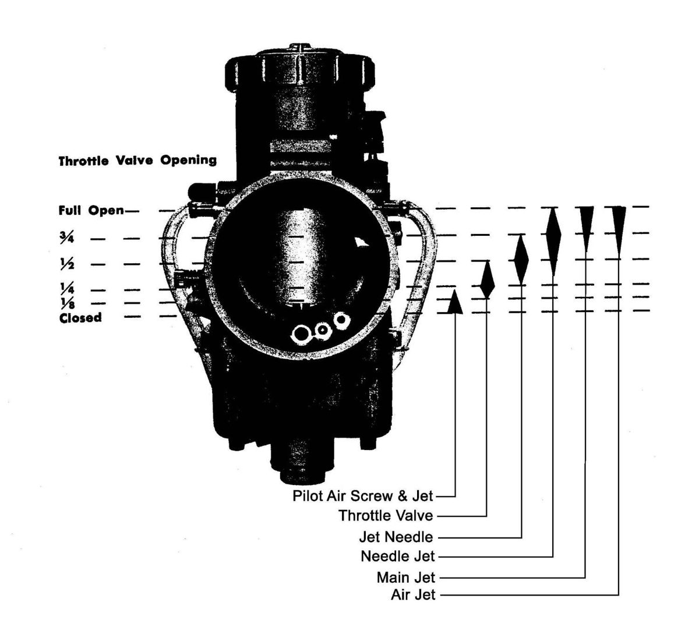

A rich or lean fault shows at some throttle openings and not at others. Each carburettor part works over a different range of throttle. Marks on the grip show where the fault is, so the right jet or needle gets changed.
Steps
- Wrap a strip of masking tape around the throttle housing and put a small piece on the grip itself.
- With the throttle closed, draw one line across both pieces so the marks line up.
- Turn the throttle fully open and draw a second line on the housing tape to match the grip mark.
- Measure the distance on the housing tape between the closed and the open marks. Divide it into quarters and mark them.
- Ride or run the engine and note at which mark the fault occurs: idle, a quarter, half, three quarters or full throttle.
- Use the chart to find the part that works there. The idle screw and pilot jet work at the lowest openings, the slide cutaway and jet needle at the middle ones, and the main jet at the highest.
- Change that part only, then retest at the same mark.
Notes
- The marks do not need to be exact. The ranges overlap, and only the general area matters.
- Test with the engine at normal running temperature and read the plug, as in Read a spark plug and choose the jet by throttle position.
Check your work
- The fault no longer appears at the marked position, and the plug colour is normal at the same throttle.